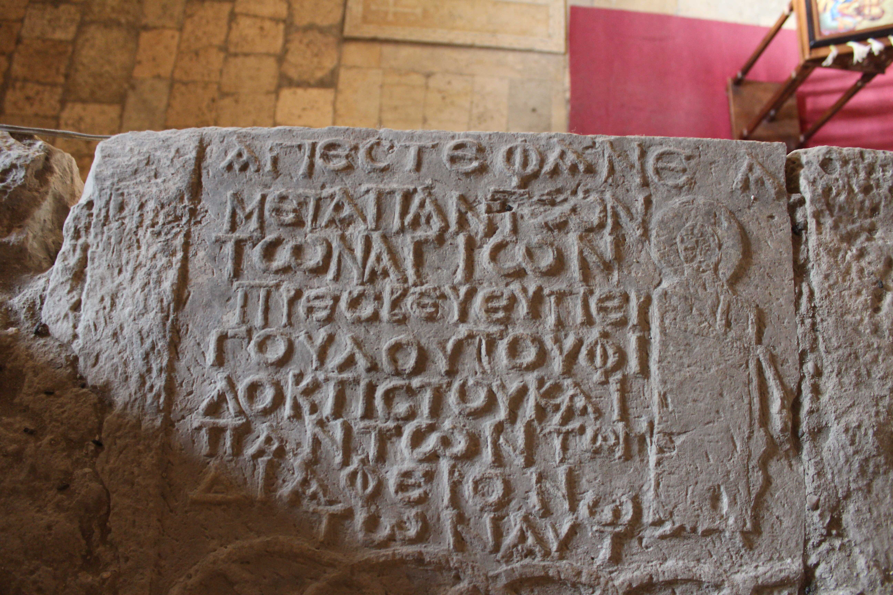

სეფიეთის ბერძნული წარწერაSepieti Greek Inscription
სეფიეთის ბერძნული წარწერა
Sepieti Greek Inscription
შინაარსი / Summary
სავედრებელი Oration
ბიბლიოგრაფია Bibliography
კრიტიკული გამოცემა Interpretive Edition
✝ ἅγιε Στέφανε
μετὰ πάντων
τῶν ἁγίων
πρέσβευε ὑπὲρს
5δούλου τοῦ Φι -
λοκτίστου καὶ
πάντων τῶν
διαφερόν -
των αὐτῶ ν
დიპლომატიური გამოცემა Diplomatic Edition
✝ ΑΓΙΕ ΣΤΕΦΑΝΕ
ΜΕΤΑ ΠΑΝΤΩΝ
ΤΩΝ ΑΓΙΩΝ
ΠΡΕΣΒΕΥΕ ΥΠΕΡᲡ
5ΔΟΥΛΟΥ ΤΟΥ ΦΙ
ΛΟΚΤΙΣΤΟΥ ΚΑΙ
ΠΑΝΤΩΝ ΤΩΝ
ΔΙΑΦΕΡΟΝ
ΤΩΝ ΑΥΤΩ Ν

Sepieti limestone plaque, 2016
{'ka': 'ქ. წმიდაო სტეფანე, ყოველთა წმიდათა თანა მეოხ ეყავ მონასა ფილოქტისტეს და ყოველთა ნათესავთა მისთა.', 'en': 'Saint Stephen, together with all the saints, be merciful towards the servant of yours Philochtistes and his close people.'}
{'ka': 'წარწერის პალეოგრაფიული მონაცემები (ასოთა მოხაზულობა, ორთოგრაფია, საერთო სტილი) და\n მართლწერის ნორმები VI-VII სს-ით დათარიღების საშუალებას იძლევიან.\n დათარიღება შეიძლება დაზუსტდეს VI ს-ით, ბერძენი ქრონოგრაფოსების ცნობების საფუძველზე. ფილა, რომელიც შემდეგ მთავარანგელოზის ეკლესიაში გამოყენებულია როგორც საშენი მასალა, ადრე უთუოდ ამშვენებდა წმ. სტეფანეს ტაძარს,\n რომელიც ამავე რაიონში იყო ყოველ შემთხვევაში VI ს-ის შუა წლებში (შდრ. აგათია, Περὶ Ἰουστ. III, 5; გეორგიკა, III, 1936., 52) . ტაძრის მოღვაწე, სხვა წყაროებით უცნობი მონა (ღვთისა) ფილოქტისტე, შესთხოვს ტაძრის მფარველ წმინდანს, სტეფანეს შუამდგომლობას,\n ცხადია, უფლის წინაშე, საკუთარი თავისა და თავისი მახლობლისათვის. IX სტრიქონში მოსალოდნელი αὐτοῦ-ს ნაცვლად არის αὐτῶ[ν].', 'en': 'The plaque that is used in the Archangel church as a building material was part of the St. Stephen church before, which was located in the same district in the middle of VI century (comAgathia, Περὶ Ἰουστ. III, 5; Georgica III, 1936., 52).\n Philochteste, a clergy not mentioned in any other source, is asking for mercy from Lord God under the name of the patron Saint of the church, St. Stephen for himself and close people to him.\n The line 9th instead of presupposed αὐτοῦ we have αὐτῶ[ν].'}
<div type="edition" xml:lang="ka" ana="mtavruli" xml:space="preserve">
<ab>
<lb n="1"/><w lemma="ქრისტე"><expan><abbr>ქ</abbr><ex>რისტ</ex><abbr>ე</abbr></expan></w>
<w lemma="განსუენება"><expan><abbr>გა</abbr><ex>ნ</ex><abbr>ო</abbr><ex>ჳ</ex><abbr>ს</abbr><ex>უ</ex><abbr>ენე</abbr></expan></w>
<w lemma="სულ">სოჳ<lb n="2" break="no"/>ლსა</w>
<name nymRef="ვაჩა">ვაჩაჲს<lb n="3" break="no"/>ასა</name>
<name nymRef="გურა"><expan><abbr>გო</abbr><ex>ჳ</ex><abbr>რაჲ<lb n="4" break="no"/>სასა</abbr></expan></name>
<name nymRef="მირა"><expan><abbr>მ</abbr><ex>ი</ex><abbr>რა</abbr><ex>ჲ</ex><abbr>ს</abbr><ex>ა</ex><abbr>ს</abbr><ex>ა</ex></expan></name>
</ab>
</div>